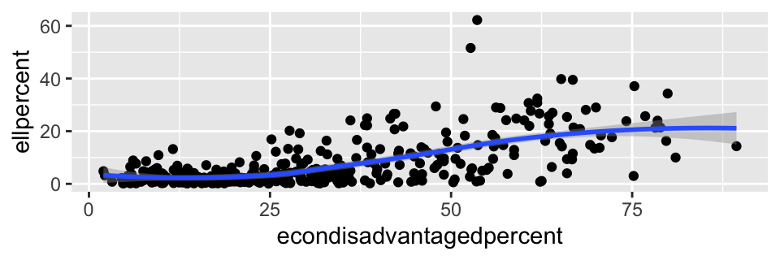

knitr::opts_chunk$set(echo = TRUE)
library("tidyverse")
library("readr")
library("ggplot2")
library("dplyr")
knitr::opts_chunk$set(fig.width = 5, fig.asp = 1/3)
INTRODUCTION
The Class Size by Gender and Selected Populations data represents the number of classes and average class size for each subject by gender, Limited English Proficient and Low Income for public school districts in Massachusetts.
According to this data, Massachusetts Public School Districts have on average 1142 total number of classes with an average class size of 17.7. The average Massachusetts Public School District has 2382 students with 48.8% identifying as Female and 50.9% identifying as Male. On average, 6.66% of students are English Language Learners (ELLs), 18.47% of students have disabilities and 30.53% are Economically Disadvantaged.
The purpose of this analysis is to compare the data from school districts with a high number of economically disadvantaged students to districts with a low number of economically disadvantaged students. My prediction is that schools with larger percentages of economically disadvantaged students will also have larger populations of students with disabilities and of English Language Learners, as well as larger class sizes. I predict that percentages of male and female students will be the same regardless of the economically disadvantaged variable.
I think this is important data to study because if my predictions are correct, further research should be done to look into the breakdown of state funding for districts with greater numbers of economically disadvantaged students. I am assuming that districts with more economically disadvantaged students do not receive the same amount of local funding per student as districts with fewer economically disadvantaged students, and so they would rely on the state to even the playing field. And if school districts with greater numbers of economically disadvantaged students do in fact also have more ELLs and students with disabilities, those districts actually need more funding per student, given that students who are ELLs and students with disabilities need more support services than other students.
If my predictions are correct that class sizes are larger among districts with more economically disadvantaged students, again all signs point to more research on funding. Class sizes can only decrease with more staff and more space, both of which require additional funding. For more information on the benefits of smaller class size and student learning, please refer to the multiple sources available at the website below.
https://classsizematters.org/research-and-links/
I am the daughter of a public school teacher, the mother of a public school Pre-Kindergartener and an employee of the state’s largest teacher’s union. I am passionately pro-public education. I think we all need to constantly be checking to make sure that public school students across the state are all receiving a quality education. Comparing the variables of this data set is one way to see if students are having different experiences, and if those differences are at all related to economic situation.
DATA
The 9 variables are District, Total Number of Classes (Classes), Average Class Size (avgclasssize), Number of Students (students), Percentage of Students who identify as Male (malepercent), Percentage of Students who identify as Female (femalepercent), Percentage of students that are English Language Learners(ellpercent), Percentage of Students with Disabilities (studentswdisabilitiespercent) and Percentage of students that are Economically Disadvantaged (econdisadvantagedpercent). Number of students includes Pre-Kindergarten through 12th grade students. All “Percentage of” student data is out of the entire school district population. Additional definitions are included below.
There are 403 observations (school districts). Please note that only public school districts are included. This includes some public charter schools, but does not include private charter schools or any private schools in Massachusetts. Some observations include missing data.
More information is also available at the original source: https://profiles.doe.mass.edu/statereport/classsizebygenderpopulation.aspx
Data sourced from SIMS (Student Information Management Systems), SCS (Student Course Schedule) and EPIMS (Education Personnel Information Management System)
DEFINITIONS
Total # of Classes: Number of classes is based on classes that could be linked between SIMS, EPIMS, and SCS by School, Course, Section, and Term. The class must have a class count greater than 1 (one) and have students in the class who have a SCS enrollment status of enrolled, completed, or incomplete.
Average Class Size: Average Class Size is calculated by dividing the total number of students in classes by the total number of classes. Students taking multiple classes will be included in multiple class size averages.
Number of Students: This figure is de-duplicated count of students at the subject, district, and school levels.
English Learners: Indicates the percent of enrollment who are English learners, defined as "a student whose first language is a language other than English who is unable to perform ordinary classroom work in English
Economically Disadvantaged: Calculated based on a student’s participation in one or more of the following state-administered programs: the Supplemental Nutrition Assistance Program (SNAP); the Transitional Assistance for Families with Dependent Children (TAFDC); the Department of Children and Families’ (DCF) foster care program; and MassHealth (Medicaid).
The Massachusetts Department of Elementary and Secondary Education (DESE) is the state education agency for Massachusetts. One of DESE’s primary purposes is to collect data to inform state and local decisions. MA DESE’s website includes hundreds of different data sets.
HOMEWORK 4
While reading in this data, I did remove the School District ID column, which may be useful in future research. (Perhaps if someone was interested in combining various DESE datasets into one.)
I also had some observations that included “0” as a value for all variables.That seemed to be meaningless since a district could not have 0 students, 0 classes, etc. I was concerned that keeping that data in the dataset would incorrectly skew my analysis. Including a “0” in a small dataset, when calculating average would result in an incorrect low average. Thanks to the #r-help slack page, I was able to receive advice as to what code would help me correct this issue.
data<-read_csv("ClassSizebyGenPopulation.csv",skip=2,
col_names= c("District", "delete", "classes", "avgclasssize", "students","femalepercent","malepercent","ellpercent","studentswdisabilitiespercent","econdisadvantagedpercent"))%>%
select(!contains("delete"))
data.missing <- data%>%
mutate(allna = rowSums(select(., classes:econdisadvantagedpercent)),
across(classes:econdisadvantagedpercent, ~case_when(
. == 0 ~ NA_real_,
. > 0 ~ .)))%>%
filter(allna ==0)%>%
select(-allna)
head(data.missing)
# A tibble: 1 × 9
District classes avgclasssize students femalepercent malepercent
<chr> <dbl> <dbl> <dbl> <dbl> <dbl>
1 Gosnold NA NA NA NA NA
# … with 3 more variables: ellpercent <dbl>,
# studentswdisabilitiespercent <dbl>,
# econdisadvantagedpercent <dbl>data.clean <- data%>%
mutate(allna = rowSums(select(., classes:econdisadvantagedpercent)),
across(classes:econdisadvantagedpercent, ~case_when(
. == 0 ~ NA_real_,
. > 0 ~ .)))%>%
filter(!allna ==0)%>%
select(-allna)
head(data.clean)
# A tibble: 6 × 9
District classes avgclasssize students femalepercent malepercent
<chr> <dbl> <dbl> <dbl> <dbl> <dbl>
1 Abby Kelley… 711 19 1424 54 46
2 Abington 1034 22.4 2194 48.9 51.1
3 Academy Of … 185 19.1 539 49.5 50.5
4 Acton-Boxbo… 2190 20.2 5463 48.2 51.8
5 Acushnet 546 20.2 1016 47 53.1
6 Advanced Ma… 510 18.1 964 47.6 52.4
# … with 3 more variables: ellpercent <dbl>,
# studentswdisabilitiespercent <dbl>,
# econdisadvantagedpercent <dbl>Here I ran some very basic code to help be understand this data.
summarise_all(data.clean, mean)
# A tibble: 1 × 9
District classes avgclasssize students femalepercent malepercent
<dbl> <dbl> <dbl> <dbl> <dbl> <dbl>
1 NA 1144. 17.8 2388. 48.9 51.1
# … with 3 more variables: ellpercent <dbl>,
# studentswdisabilitiespercent <dbl>,
# econdisadvantagedpercent <dbl>dim(data.clean)
[1] 402 9colnames(data.clean)
[1] "District" "classes"
[3] "avgclasssize" "students"
[5] "femalepercent" "malepercent"
[7] "ellpercent" "studentswdisabilitiespercent"
[9] "econdisadvantagedpercent" head(data.clean)
# A tibble: 6 × 9
District classes avgclasssize students femalepercent malepercent
<chr> <dbl> <dbl> <dbl> <dbl> <dbl>
1 Abby Kelley… 711 19 1424 54 46
2 Abington 1034 22.4 2194 48.9 51.1
3 Academy Of … 185 19.1 539 49.5 50.5
4 Acton-Boxbo… 2190 20.2 5463 48.2 51.8
5 Acushnet 546 20.2 1016 47 53.1
6 Advanced Ma… 510 18.1 964 47.6 52.4
# … with 3 more variables: ellpercent <dbl>,
# studentswdisabilitiespercent <dbl>,
# econdisadvantagedpercent <dbl>tail(data.clean)
# A tibble: 6 × 9
District classes avgclasssize students femalepercent malepercent
<chr> <dbl> <dbl> <dbl> <dbl> <dbl>
1 Winchester 2416 19.3 4722 50 50
2 Winthrop 698 20.5 1998 51.1 48.9
3 Woburn 2711 16.8 4544 50.3 49.7
4 Worcester 12818 15.6 25186 48.6 51.4
5 Worthington 50 10.6 94 48.9 51.1
6 Wrentham 422 18.2 967 48.4 51.6
# … with 3 more variables: ellpercent <dbl>,
# studentswdisabilitiespercent <dbl>,
# econdisadvantagedpercent <dbl>HOMEWORK 5
I created 3 ggplot graphs to provide preliminary visual graphics to help me answer the specific question, “are class sizes larger among school districts with the greatest number of economically disadvantaged students?” The geomsmooth ggplot graph suggests “yes, slightly”, but the ggplots with geom_points are less decisive. Clearly further analysis is necessary.
I found the ggplot with geompoint and geomsmooth to provide the most useful visual for this type of question. I repeated the same type of ggplot graph for the question “are there more students with disabilities at schools with the greatest number of economically disadvantaged students?” Again, it looks like the answer is yes, but only slightly.
The final ggplot graph in this section addresses the question, “are there more Engligh Language Learners at schools with the greatest number of economically disadvantaged students?” The answer to this question seems to be a more cetain “yes”. The Percentage of ELL students definitely seems to increase as the percentage of economically disadvantaged students increases.
My next plan is to mutate the “econdisadvantagedpercent” data so that the variables are named ranges (tbd), for example 0-10%, 11-20%, 21-30%…. and name them “very low”, “low”, “medium”, “high”, and “very higher”. I will then run additional graphs, possibly using facets and fill. I’ve been challenged because all of the values for all of the variables are integers, I think I’ll be able to produce better visuals and see results more clearly with the updates mentioned here.
ggplot(data = data.clean)+
geom_point(mapping = aes(x= econdisadvantagedpercent, y=avgclasssize))
ggplot(data = data.clean)+
geom_smooth(mapping = aes(x= econdisadvantagedpercent, y=avgclasssize))
ggplot(data = data.clean) +
geom_point(mapping = aes(x = econdisadvantagedpercent, y = avgclasssize)) +
geom_smooth(mapping = aes(x = econdisadvantagedpercent, y = avgclasssize))
ggplot(data = data.clean) +
geom_point(mapping = aes(x = econdisadvantagedpercent, y = studentswdisabilitiespercent)) +
geom_smooth(mapping = aes(x = econdisadvantagedpercent, y = studentswdisabilitiespercent))

ggplot(data = data.clean) +
geom_point(mapping = aes(x = econdisadvantagedpercent, y = ellpercent)) +
geom_smooth(mapping = aes(x = econdisadvantagedpercent, y = ellpercent))

I created a subset of data for the 40 districts (roughly 10%) with the most economically disadvantaged students (high_econdis_data) and another for the 40 districts (roughly 10%) with the least economically disadvantaged students (low_econdis_data). I ran some quick averages to see some comparisons.
The “Low Economically Disadvantaged” district data have an average of 5.70% economically disadvantaged students, 2.22% English Language Learners and 15.1% students with disabilities.
Comparatively, the “High Economically Disadvantaged” district data has an average of 69.5% economically disadvantaged students, 19.7% English Language Learners and 22% students with disabilities.
This all seems consistent with the ggplots above.
The “Low Economically Disadvantaged” districts have an average class size of 17.6 and 2268 total students in the district. The “High Economically Disadvantaged” districts have an average class size of 19.4 and 3852 total students in the district.
One thing I found interesting, and unexpected was regarding gender identification.
Among the “High Economically Disadvantaged” districts, 49.6% identify as female and 50.3% identify as male, leaving approximately 0.1% of students as not identifying strictly as male or female. In the “Low Economically Disadvantaged” districts 48.4% identify as female and 49.0% identify as male, leaving approximately 2.6% as not identifying strictly as male or female.
I initially only included 10 districts in each of these subsets, but it seemed like such a small subset would not be as useful as each subset would be made up primarily of outliers.
Since I ran the same code (summarize_all(mean)) multiple times, I think maybe it would be more efficient to create my own code, but I’m still trying to figure that out.
data<- arrange(data.clean,desc(`econdisadvantagedpercent`))
high_econdis_data<- head(data.clean,40)
low_econdis_data<- tail(data.clean,40)
summarise_all(high_econdis_data, mean)
# A tibble: 1 × 9
District classes avgclasssize students femalepercent malepercent
<dbl> <dbl> <dbl> <dbl> <dbl> <dbl>
1 NA 1037. 18.7 2202. 48.8 51.1
# … with 3 more variables: ellpercent <dbl>,
# studentswdisabilitiespercent <dbl>,
# econdisadvantagedpercent <dbl>summarise_all(low_econdis_data, mean)
# A tibble: 1 × 9
District classes avgclasssize students femalepercent malepercent
<dbl> <dbl> <dbl> <dbl> <dbl> <dbl>
1 NA 1459. 17.5 3004. 48.5 51.5
# … with 3 more variables: ellpercent <dbl>,
# studentswdisabilitiespercent <dbl>,
# econdisadvantagedpercent <dbl>low_econdis_data%>%
select(ellpercent, studentswdisabilitiespercent, econdisadvantagedpercent)%>%
summarize_all(mean)
# A tibble: 1 × 3
ellpercent studentswdisabilitiespercent econdisadvantagedpercent
<dbl> <dbl> <dbl>
1 NA 18.2 28.1high_econdis_data%>%
select(ellpercent, studentswdisabilitiespercent, econdisadvantagedpercent)%>%
summarize_all(mean)
# A tibble: 1 × 3
ellpercent studentswdisabilitiespercent econdisadvantagedpercent
<dbl> <dbl> <dbl>
1 6.74 17.3 29.3low_econdis_data%>%
select(avgclasssize, students)%>%
summarize_all(mean)
# A tibble: 1 × 2
avgclasssize students
<dbl> <dbl>
1 17.5 3004.high_econdis_data%>%
select(avgclasssize, students)%>%
summarize_all(mean)
# A tibble: 1 × 2
avgclasssize students
<dbl> <dbl>
1 18.7 2202.low_econdis_data%>%
select(femalepercent, malepercent)%>%
summarize_all(mean)
# A tibble: 1 × 2
femalepercent malepercent
<dbl> <dbl>
1 48.5 51.5high_econdis_data%>%
select(femalepercent, malepercent)%>%
summarize_all(mean)
# A tibble: 1 × 2
femalepercent malepercent
<dbl> <dbl>
1 48.8 51.1REFLECTION
(work in progress) Should not have called data, data should have had shorter variable names
https://www.doe.mass.edu/About.html https://profiles.doe.mass.edu/statereport/classsizebygenderpopulation.aspx https://classsizematters.org/research-and-links/
Distill is a publication format for scientific and technical writing, native to the web.
Learn more about using Distill at https://rstudio.github.io/distill.